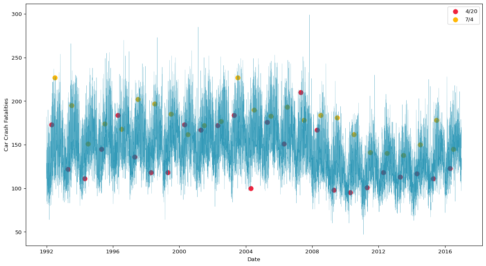
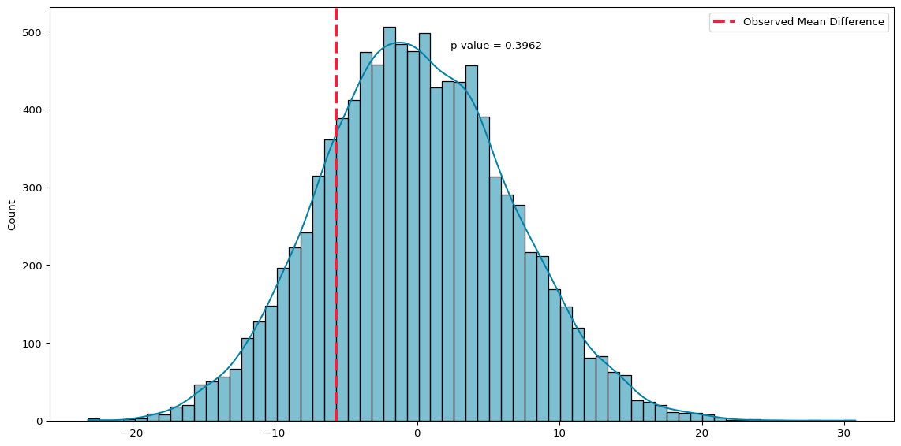
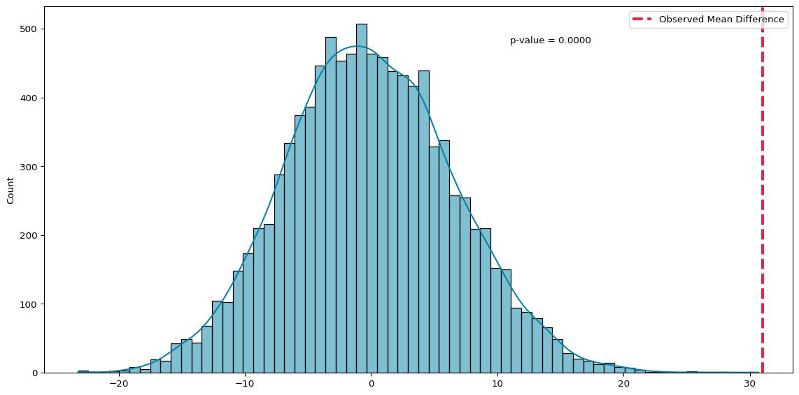

This notebook is the first in a five-part series covering foundational statistics and the building blocks for regression modelling. This session walks through the process of comparing samples, demonstrating why comparisons matter and how we approach them, and applies these ideas using data on fatal car crashes in the U.S.
We will discuss why we compare groups in data analysis, the differences between population and sample data, how to visualise and interpret group differences, and how to assess whether differences are statistically meaningful.
The goal of this session is for everyone to understand the role of comparison in statistics, as well as to recognise what comparisons between groups can tell us and what their limitations are.
Why Compare?
Comparison is fundamental to how we learn from data. When we observe something in data, whether it is a specific observation, a broader pattern across observations, or the outcome of a calculation, we need context to understand its meaning. Is this value high or low? Is it unusual? Should we pay more attention to it?
Imagine an online store making changes to its website with the intention of boosting sales. After a week, the changes made generated £250k in sales. Is that good? We don’t know because we don’t have anything to compare against. The store could compare this figure to the sales from the previous week. Better yet, they could run the original version of the website concurrently alongside the new version, serving different versions of the website to users at random, to more directly compare sales. If the original version of the website generated only £230k in sales, we now have a meaningful comparison that suggests that the new version of the site may boost sales.
Raw numbers rarely tell us complete stories. A patient’s blood pressure is only meaningful because we know what a healthy range is, and we can use this for comparison. Without comparison, data is meaningless.
What does Comparison Really Tell Us?
When we compare two groups in our data, what we really want to know is whether those groups differ in the real world, not just whether they differ in the data. The comparison in the data serves as a proxy for understanding differences in the wild. The data is a “sample” of what the real world (the population) looks like. But suppose we see a difference between two groups in our data. How do we know if that reflects a difference that is occurring in the population, instead of being caused by random variation in the data?
Separating real patterns, or signal, from the noise in data is a fundamental part of statistics and is the driving force behind everything in statistical inference. Good comparisons account for the possibility of random variation and consider the ways in which the comparisons we are making may be flawed or incomplete. If the online store compared the previous week’s sales, this would still be useful, but what if the previous week included a holiday that led to a significant boost of sales, or the week the new site was launched was payday for a lot of customers? It is important to consider whether your comparison is really meaningful.
Questions:
How do you currently decide whether the difference you observe in your data is real or occurred by chance?
Why is it important to know if differences observed in data occurred by chance?
Population vs. Sample
The population is every possible unit or observation relevant to what you are studying, while the sample is a subset of the population. If you wanted to estimate how income affects housing prices in UK cities, the population would be every city in the UK. A sample would be data covering a handful of (hopefully representative) cities.
If we had access to the entire population, comparisons would be straightforward. However, we usually don’t, so we have to take a sample of the population and make inferences about the population based on our sample. That means dealing with uncertainty, variation, and potential bias.
To compare groups responsibly, we need to consider how sampling affects what we observe and how it may limit our ability to make accurate comparisons. The sample is a small snapshot of the population, and there are several reasons why it might not be representative of the wider population.
Below is an example illustrating the difference between the population and the sample, simulating drawing ten cards from a standard deck and calculating the average value of the cards drawn.
import numpy as npimport random# simulate drawing 10 cards from a standard deckdeck =list(range(1, 14)) *4# draw two random samples of ten cardssample1 = random.sample(deck, 10)sample2 = random.sample(deck, 10)# compute sample meanssample_mean1 = np.mean(sample1)sample_mean2 = np.mean(sample2)# compute population meanpopulation_mean = np.mean(deck)print(f"Sample means: {sample_mean1}, {sample_mean2}")print(f"Population mean: {population_mean}")
Sample means: 6.3, 6.1
Population mean: 7.0
We have taken two samples from the population. Their mean values are 6.3 and 6.3, which vary slightly from the population mean (7.0). Why do the sample means differ from each other and the population mean?
Sampling variability is inevitable. Each sample captures only a slice of the full population, and in small samples, this can lead to significant variances in the sample and population means. Perhaps the first ten cards drawn from the deck have a high number of face cards, or the second sample has lots of 2s, 3s, and 4s. Even if the process for drawing a sample is fair, individual samples will always vary. This is a core challenge of inference. We rely on well-designed comparisons to manage these uncertainties, using statistical tools that help us determine whether sample-level observations likely reflect real population-level differences.
While previous research has concluded that fatalities are higher on 4/20, suggesting that the holiday is the cause of the increase, Harper and Palayew find no evidence for an increase in fatalities on 4/20, but they do find an increase for other holidays like July 4th. We will investigate whether we can see a spike in fatalities on 4/20 by comparing 4/20 with other days of the year.
There are several observations where values for e420 are missing. All of the missing values are on 4/20, but closer inspection shows that there are multiple observations for these days. This appears to be because e420 == True only for the time period covering the holiday (which isn’t the entire day), and the NAs are likely to be crashes where the exact time was undetermined and may or may not fall in the 4/20 window.
We will transform the data to take the sum value of all 4/20 fatalities, for simplicity1, and select the columns we want to use in our analysis.
df = ( raw_420# group by date, sum fatalities .groupby(['date'], as_index=False)['fatalities_count'].sum()# add 4/20 and 7/4 indicators .assign( is_420=lambda d: pd.to_datetime(d['date']).dt.strftime('%m-%d').eq('04-20'), is_july4=lambda d: pd.to_datetime(d['date']).dt.strftime('%m-%d').eq('07-04') ))
df.head()
date
fatalities_count
is_420
is_july4
0
1992-01-01
144
False
False
1
1992-01-02
111
False
False
2
1992-01-03
182
False
False
3
1992-01-04
152
False
False
4
1992-01-05
99
False
False
First, lets calculate the mean value of fatalities on 4/20 and all other days, to see whether there is an obvious spike.
There are a lot more fatalities from car crashes on July 4th than the rest of the year (including 4/20). This gives us a good starting point to start digging further into the data.
Visual Comparisons
We can make comparisons in a variety of ways, from describing the difference between samples using descriptive measures (such as the mean value) to carrying out statistical tests that estimate the likelihood that observed differences between samples occur in the population. Visualising data is an effective way to make quick comparisons between samples. We can identify visual patterns much faster than we can using descriptive measures.
We can start by plotting our data to better understand how fatalities vary over time and how the number of car crash fatalities on 4/20 and July 4th compare to the rest of the year.
import matplotlib.pyplot as pltimport seaborn as snsplt.figure(figsize=(15, 8))# line plot of daily fatalitiessns.lineplot(data=df, x='date', y='fatalities_count', color="#0081a7", linewidth=0.25, alpha=0.8)# scatter plot for 4/20sns.scatterplot( data=df.loc[df['is_420']], x='date', y='fatalities_count', color='#ef233c', label='4/20', s=100)# scatter plot for 7/4sns.scatterplot( data=df.loc[df['is_july4']], x='date', y='fatalities_count', color='#ffb703', label='7/4', s=100)plt.xlabel('Date')plt.ylabel('Car Crash Fatalities')plt.legend()plt.show()

Figure 1: Daily Fatalities (1992-2016)
Figure 1 shows that there is clearly a seasonal trend in daily car crash fatalities, and there is significant variance in fatalities on both 4/20 and July 4th. While this plot does tell us a lot about the data, it hasn’t made comparison easier.
We can visualise the distribution of samples as a way to make comparisons. This can help us identify differences in the shape of the samples, which tells us a lot. Figure 2 below compares 4/20 and all other days.
Figure 2: Distribution of Fatalities on 4/20 & Other Days
The imbalance between 4/20 and other days in the year makes it impossible to really see what is going on in our histogram.
We can normalise the two distributions such that the total area of both equals one. This preserves their shape but accounts for the count imbalance between the two. We can also replace the boxplot with a violin plot, which will give us a little more intuition for the shape of the two groups.
Figure 3: (Normalised) Distribution of Fatalities on 4/20 & Other Days
There is minimal difference between the two distributions in Figure 3, though the peak of the 4/20 distribution does appear to be slightly lower than the other days.
We can also visualise the distribution of fatalities on July 4th, for comparison.
Figure 4: (Normalised) Distribution of Fatalities on July 4th & Other Days
The differences between the two distributions in Figure 4 are a lot clearer. While there is some overlap, the July 4th distribution shows that there are generally more deaths on July 4th than on other days.
There are many ways to make comparisons visually, and the plots above are just an example of some of the approaches you can use to compare samples. It’s always worth looking at the data in a variety of ways and finding the most appropriate ways to make comparisons. The right way to compare your samples depends on the question you are asking, so it’s important to think carefully about your approach and what it is telling you.
Testing Comparisons
Visual and descriptive comparisons are limited because they only tell us whether there is a difference. They don’t help us infer whether those difference occurred due to random variation or if there is something real going on. Visual comparisons cannot tell us whether we should expect to observe the differences we see in our samples in the population.
That’s where statistical tests come in! Once we’ve visualized potential differences, we can test whether those differences are likely to occur in the population, using a two-sample \(t\)-test.
A \(t\)-test is a statistical test used to compare the means of two groups to determine if the difference between them is statistically significant. It takes into account:
The size of the difference between the two group means.
The variability (spread) of the data within each group.
The sample size (number of observations in each group).
The \(t\)-test calculates a p-value, which is the probability of observing a difference as extreme or more extreme than the one found, assuming there is no true difference between the groups in the population (i.e., the null hypothesis is true). The Null Hypothesis Significance Testing (NHST) framework sets a threshold (typically 0.05) where, if the \(p\)-value is below that threshold, you reject the null hypothesis and conclude that the difference between the groups is likely real and not due to random chance (referred to as statistically significant).
However, statistical significance and the NHST are thorny issues. Instead, it is better to think of \(p\)-values as continuous instead of treating them as binary. If we compute a difference (or effect size) of 0.45 with a \(p\)-value of 0.01, that means we’d expect to see an effect size this large less than 1% of the time by chance alone, assuming no true relationship. Whether a difference of 0.45, with a 1% chance of this occuring by chance, is enough for us to conclude this is substantively important is dependent on context.
NoteWhy Significance Is a Thorny Issue
While \(p\)-values are widely used, they come with caveats:
Binary thinking - Treating \(p\) < 0.05 as “proof” of an effect and rejecting \(p\) > 0.05 as no effect is misleading. Evidence exists on a continuum.
Sample size matters - With huge samples, even tiny effects can be “significant”. With small samples, meaningful effects might not reach the threshold.
Misinterpretation - A \(p\)-value doesn’t tell us how big or important an effect is, nor the probability that the hypothesis is true.
Multiple testing - The more tests we run, the more likely we’ll find “significant” results by chance (false positives).
The better approach is to treat \(p\)-values as one piece of evidence. Pair them with effect sizes, confidence intervals, visualizations, and context.
Let’s first carry out a \(t\)-test to compare fatalities on 4/20 and all other days.
from scipy.stats import ttest_ind# create our samples for comparisongroup_420 = df.loc[df.is_420, 'fatalities_count']group_other = df.loc[~df.is_420, 'fatalities_count']# calculate t-statistic and p-valuet_stat, p_val = ttest_ind(group_420, group_other, equal_var=False)print(f"t-statistic = {t_stat:.3f}, p-value = {p_val:.3f}")# calculate mean differencemean_diff = group_420.mean() - group_other.mean()print(f"Mean difference = {mean_diff:.2f}")
t-statistic = -0.863, p-value = 0.397
Mean difference = -5.77
There is a difference in the means of the two samples of almost 6 fatalities, but the \(p\)-value is almost 0.4, which suggests we are very uncertain about whether this is a meaningful effect or just the product of random variation. A high \(p\) suggests we probably need more data, or a more precise approach to estimating 4/20s effect, before we can draw any conclusions.
While our \(t\)-test found minimal evidence that there is a meaningful difference in the number of fatalities by car crash on 4/20, perhaps the bigger mean difference we saw on July 4th will be sufficient to draw some conclusions.
from scipy.stats import ttest_ind# create our samples for comparisongroup_july4 = df.loc[df.is_july4, 'fatalities_count']group_other = df.loc[~df.is_july4, 'fatalities_count']# calculate t-statistic and p-valuet_stat, p_val = ttest_ind(group_july4, group_other, equal_var=False)print(f"t-statistic = {t_stat:.3f}, p-value = {p_val:.3f}")# calculate mean differencemean_diff = group_july4.mean() - group_other.mean()print(f"Mean difference = {mean_diff:.2f}")
t-statistic = 6.381, p-value = 0.000
Mean difference = 31.01
There are, on average, 31 more fatalities on July 4th than the rest of the year, and the \(p\)-value is so small that it rounds to zero. This indicates that it is highly likely that this is a real effect that we should expect to observe in the population.
However, it is important to note that this does not confirm our theory that the cause of this spike in fatalities is July 4th (the holiday). We are only able to conclude that this difference is not caused by random variation, but our test does not prove what has caused it.
Using Simulation for Comparisons (Click to Expand)
Simulation-Based Tests
For anyone that struggles to remember all the different types of statistical tests you can use to compare samples and when a particular test is appropriate, I would highly recommend learning the Simulation-Based Testing framework, which uses simulation methods to approximate the process that statistical tests carry out when comparing samples.
A detailed explanation of how this approach to testing works is out of the scope of this session, but below is a replication of our tests using a simulation-based method.
def simulate_two_groups(data1, data2): n, m =len(data1), len(data2) data = np.append(data1, data2) np.random.shuffle(data) group1 = data[:n] group2 = data[n:]return group1.mean() - group2.mean()
# run 10000 simulations to test nullnp.random.seed(42)simulated_diffs = [simulate_two_groups(group_420, group_other) for _ inrange(10000)]# observed mean differenceobserved_diff = group_420.mean() - group_other.mean()# calculate p-valuediffs = np.array(simulated_diffs)p_sim = np.mean(np.abs(diffs) >= np.abs(observed_diff))# plot distribution of simulated differences with p-valuesns.histplot(diffs, kde=True, color='#0081a7')plt.axvline(observed_diff, color='#ef233c', linewidth=3, linestyle="--", label='Observed Mean Difference')plt.legend(loc='upper right')# annotate p-value on the plotplt.text( x=observed_diff+8, y=plt.gca().get_ylim()[1]*0.9, s=f'p-value = {p_sim:.4f}' )plt.tight_layout()plt.show()

Permutation Test (4/20 Vs Other Days)
Simulation confirms the result and emphasizes flexibility: even when assumptions are questionable, we can still test meaningfully. It also reinforces that inference is about what would happen if we repeated the experiment many times.
# run 10000 simulations to test nullnp.random.seed(42)simulated_diffs = [simulate_two_groups(group_july4, group_other) for _ inrange(10000)]# observed mean differenceobserved_diff = group_july4.mean() - group_other.mean()# calculate p-valuediffs = np.array(simulated_diffs)p_sim = np.mean(np.abs(diffs) >= np.abs(observed_diff))# plot distribution of simulated differences with p-valueplt.figure(figsize=(12, 6))sns.histplot(diffs, kde=True, color='#0081a7')plt.axvline(observed_diff, color='#ef233c', linewidth=3, linestyle="--", label='Observed Mean Difference')plt.legend(loc='upper right')plt.title('')# annotate p-value on the plotplt.text( x=observed_diff-20, y=plt.gca().get_ylim()[1]*0.9, s=f'p-value = {p_sim:.4f}' )plt.tight_layout()plt.show()

Permutation Test (7th July Vs Other Days)
Limitations of Comparison
Comparing samples of data can be very useful. There is descriptive value in just knowing that differences exist in the data, and this may point to a meaningful difference in the population. However, if you are trying to understand what caused the differences between the two samples, comparison is not enough.
Our analysis shows that there are fewer crashes on 4/20 than other days, but there was considerable uncertainty about this comparison, and the approach had significant flaws. Our comparison assumes that the only difference between 4/20 and other days in the data is the date itself, and the cultural holiday that takes place on this date. We haven’t accounted for other causes of variation in the number of crashes. We haven’t accounted for other holidays, weather patterns, or daily differences in the number of people on the road.
Comparisons only measure what we observe, not necessarily what we want to know. It is important to consider how your comparison might not answer the question you are actually asking. And it is important to consider ways that your comparison may be flawed, and what else may be going on in the data.
Wrapping Up
We’ve walked the workflow for carrying out comparisons using statistical methods. With these methods we can make meaningful comparisons between samples in our data. This gives us a solid foundation for carrying out analysis. We can identify differences, quantify uncertainty, and make inferences from data. But these methods have limitations. They don’t account for multiple variables or continuous predictors. Context and sample size also matter.
In future sessions we will take this a step further, analysing how variables relate to each other. That lets us ask new types of questions. We’ll explore how variables change together, detect trends, and lay the foundation for regression.
Footnotes
This is definitely not an appropriate way to deal with this problem if we were being precise, but in order to save on time this approach makes sense. For a more complete analysis, check out the Harper & Palayew paper this data is taken from.↩︎